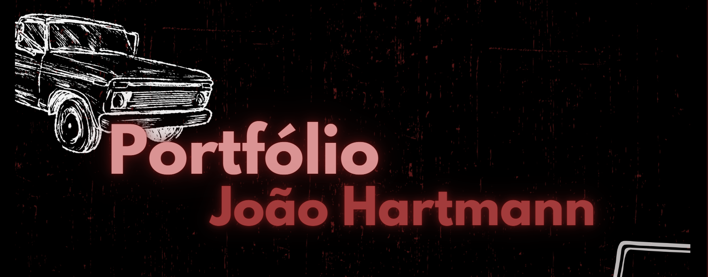
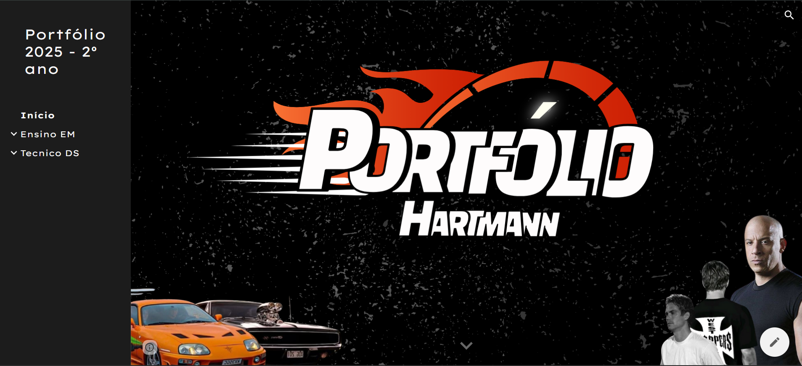

Bem-vindo ao meu portfólio pessoal! Aqui você encontrará informações sobre mim, meus objetivos e meus projetos. Sinta-se à vontade para explorar e conhecer um pouco mais sobre minha jornada e minhas conquistas.
Me chamo João Victor, sou uma pessoa proativa e gosto de trabalhar em equipes colaborativas. Já atuei como jovem aprendiz em algumas empresas, o que me proporcionou experiência e desenvolvimento profissional. Sou bastante eclético quando se trata de música e estou sempre ouvindo algo sempre que tenho oportunidade. Valorizo muito a companhia de pessoas que me fazem bem, como familiares e amigos. Além disso, sempre que posso, procuro ajudar aqueles que estão ao meu redor, pois me preocupo genuinamente com o bem-estar dos outros.
Desde pequeno, sempre tive o objetivo de conquistar minhas próprias coisas, como minha casa, meu
carro,
minha família e um bom trabalho. Mas, além dos bens materiais, também quero criar boas
lembranças com
minha família, meus amigos e até mesmo em momentos sozinho.
Para isso, primeiro preciso terminar o Ensino Médio e depois entrar na faculdade. Tenho
interesse tanto
em Engenharia de Software, porque gosto de tecnologia, quanto em Técnico Agrícola, por conta do
meu
apreço pelo campo. São duas áreas que me chamam a atenção e nas quais posso construir um futuro.

Este é o Portfólio do primeiro ano onde utilizamos o Canva para criar um design moderno e atraente, onde estamos desenvolvendo nossas habilidades de design e criatividade.

Este é o Portfólio do segundo ano onde utilizamos o Google Sites para criar um design mais profissional e funcional.